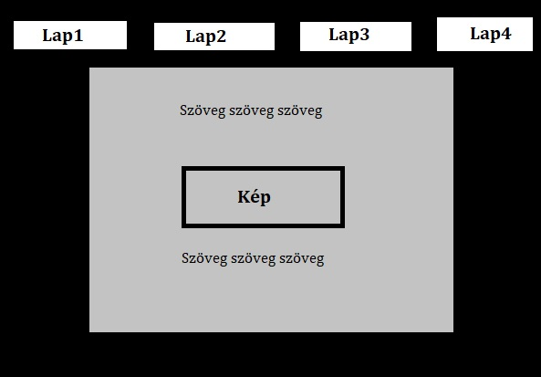

A weboldal tervezése során igyekeztem minél egyszerűbben megvalósítható, de mégsem olyan nagyon igénytelen lapot csinálni. Egy oldalt meg is rajzoltam, és az alapján alkottam meg. Magán a tartalmon nem gondolkoztam túl sokat. A portfóliólapomon olyan dolgokat jelenítettem meg, amikre büszke vagyok, amik sokat jelntenek számomra.
Sajnos soha nem tanultam html programozást, sőt igazán sosem vonzott, hogy legyen egy weboldalam. Így igen fájdalmas élményként tekintek vissza erre a programozásra. Mindent az internetről tanultam, lényegében végtelen weboldalt végignéztem hogyan is kellene megoldani amit szeretnék. Azonban a legnagyobb segítséget a kiíráshoz linkelt w3-as oldal illetve a Firefox html segédlete jelntette. Velük hosszú éjszakákat töltöttem, de végül megszületett eme remek mű.